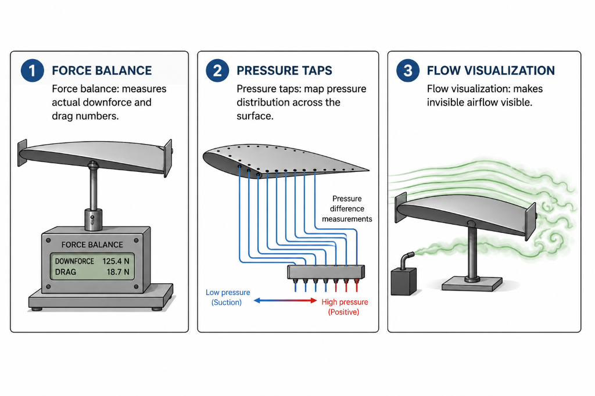
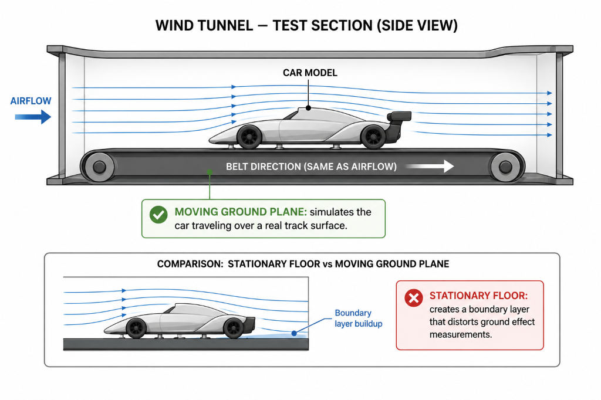

01 — HONEST NOTE
Why this lesson has no virtual wind tunnel
A virtual wind tunnel, to mean anything technically honest, would need to solve the same fluid equations a real wind tunnel physically solves.
That is exactly what CFD software does. Without that level of computation behind it, a "virtual wind tunnel" would produce pictures that look like wind tunnel output but carry no real predictive value. That kind of visual without substance would be more misleading than not having the feature at all.
So instead, this module teaches you what a real wind tunnel actually is, how it works, what it can and cannot tell engineers, and why it remains an important tool in motorsport even in an era when CFD is highly capable.
02 — THE PHYSICAL TOOL
What a wind tunnel actually is
A wind tunnel is a precisely engineered tube or chamber through which air is forced to flow at controlled speeds, with a test object — usually a scale model of the car or a full-size component — placed inside it. Instead of moving the car through air, the wind tunnel moves the air past a stationary object, which produces the same aerodynamic effect.
This equivalence is the fundamental physical principle that makes wind tunnels useful. A car traveling at 200 km/h experiences the same aerodynamic forces as a stationary car in a tunnel with 200 km/h air flowing past it, as long as the air properties and shape being tested are the same.
What matters physically is the relative speed between object and air — not which one is actually moving. This allows engineers to study aerodynamic behavior in a controlled, repeatable, measurable environment.
03 — WHAT ENGINEERS MEASURE
Three measurement techniques
Simply looking at a model in a wind tunnel tells you relatively little. The real value comes from precise measurement.

Instruments that measure actual aerodynamic forces — downforce, drag, side forces — with high precision. A wing producing 5% more downforce for the same drag is a real, meaningful result a force balance establishes clearly.
Small holes drilled into the model's surface, connected to pressure instruments. They map the actual pressure distribution across a surface — showing exactly where high and low pressure occurs in the way the diagrams throughout this course have illustrated conceptually.
Smoke traces streamlines, tufts show whether flow is attached or separated, and pressure-sensitive paint produces a full-surface color map of pressure in a single image. These techniques make the invisible visible.
04 — SCALE MODELS
Why smaller models are used — and why it is complicated
Wind tunnel testing in motorsport is often done using scale models. Common scales in Formula 1 include 60% scale models. A full-size car requires an enormous wind tunnel, and building a large enough tunnel is extremely expensive.
However, using a scale model introduces a technical complication. Aerodynamic behaviour depends not only on shape but on a dimensionless quantity called the Reynolds number, which captures the relationship between the object's size, airflow speed, and air properties.
Getting this matching right is a real engineering challenge. Results from scale model tests sometimes need careful interpretation when applied to full-size car predictions.
05 — MOVING GROUND PLANE
Why the floor of the tunnel matters enormously
One of the most important details in motorsport wind tunnel testing is the ground plane — the surface below the car model representing the track surface.
In a basic wind tunnel, the floor is stationary. But the real car drives over a track that is moving relative to the car. From the car's perspective, the ground moves past underneath it.

Modern motorsport wind tunnels use a moving belt ground plane — essentially a large treadmill running at the same speed as the tunnel airflow — to accurately simulate the moving ground surface. This makes wind tunnel facilities substantially more complex and expensive, but is considered essential for accurate ground effect testing.
This directly relates to the ground effect and diffuser content you studied earlier. The aerodynamic behaviour of the car's underbody depends sensitively on the airflow conditions right at the ground plane, which is why getting the ground simulation right is so important.
06 — CFD AND WIND TUNNELS
Complementary tools, not competing ones
If CFD can simulate airflow computationally, why do teams still bother with physical wind tunnels?

Extremely flexible and fast for exploring a large number of design variants. No physical model needs to be built. Teams can test hundreds of geometry changes computationally.
Provides physical measurements that can validate or challenge CFD predictions. CFD depends on turbulence model approximations — the wind tunnel tells you whether those approximations held up.
Formula 1 directly restricts both wind tunnel testing time and CFD hours, precisely because both tools are expensive. This makes wind tunnel access a genuinely strategic resource.
07 — BRINGING IT TOGETHER
The tool that makes aerodynamics physical
Every concept taught in this course — pressure differences, downforce, drag, flow separation, ground effect — has been described through words, diagrams, and formulas. A wind tunnel is where these concepts become physically real and measurable.
You can literally see smoke following a streamline, watch a tuft flutter to show flow separation, and read a precise downforce number from a force balance. Understanding what wind tunnels do is genuinely part of understanding how aerodynamic knowledge is created and validated in the real world.
- Why does using a scale model require adjusting test conditions, rather than simply running the tunnel at the same speed the real car travels?
- Why is a moving belt ground plane essential for accurate underbody testing, not just a stationary tunnel floor?
- If CFD is faster and more flexible, why do top teams still invest in physical wind tunnel facilities?
GO DEEPER
Books worth opening
Race Car Aerodynamics — Joseph KatzIncludes a dedicated chapter on wind tunnel testing methods and their application to motorsport.
Competition Car Aerodynamics — Simon McBeathCovers wind tunnel testing from a practical motorsport engineering perspective, including scale models and moving ground planes.
Official technical regulationsFormula 1 wind tunnel and CFD regulations provide real-world context for how these tools are strategically managed at the top level.
Finished reading this lesson?